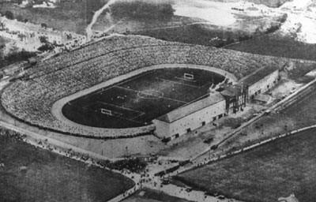

Chương 3

ăm 16 tuổi, Alex Ferguson từ giã mái trường Govan, dấn bước vào đời.Không học chữ nữa thì học nghề.Nhưng nghề gì đây? Cậu không thích theo nghiệp đóng tàu của cha. Làm bên thuế vụ-hải quan cũng hay đấy, nhưng phải đến sở cả thứ bảy, làm sao chơi bóng đá?Cuối cùng, cậu ký hợp đồng tập sự năm năm với công ty Wickman’s, học làm thợ chế tạo công cụ. Trong chương trình đào tạo, Alex phải học tổng hợp đủ thứ ngành: Nào điện, nào tiện, nào mài giũa, một tuần một buổi phải bồi dưỡng thêm cả lớp văn hóa. Làm thợ tập sự cũng không mấy khó khăn, nhưng viên quản đốc tại Wickman’s, David Nimmo, lại làm Alex cảm thấy hãi hùng. Tay này luôn thủ sẵn trong túi mấy cái đai ốc, khi hứng lên thì dùng đai ốc…củng vào đầu thợ. Alex nhiều phen tưởng vỡ sọ!
Một đêm kia, Alex tán được cô nàng khá dễ thương trên sàn nhảy. Trên đường trở về, hai người thủ thỉ hỏi chuyện nhau:
“Thế em làm ở đâu đấy?”
“Em làm văn phòng bên công ty địa ốc Hillington.Còn anh?”
“À, anh đang làm thợ tập sự?”
“Ở đâu cơ?”
“Wickman’s.”
“Wickman’s á? Ba em làm quản đốc ở đấy đấy”
Thôi chết!
Mồ hôi Alex vãi cả ra.Cậu lắp bắp hỏi tên cha người đẹp, và sau khi nghe trả lời, liền vội vã kiếm đường rút lui, một đi không trở lại. Cha mẹ ơi, trời xui đất khiến như thế nào mà lại vớ ngay con gái của David Nimmo, may mà còn chưa hôn cô ả. Cả tuần sau đó, hễ cứ gặp Nimmo là Alex rét run trong dạ, sợ ông ta chạy tới tương mấy cái đai ốc lên đầu: Thằng kia, mày lại dám chim con gái ông à?
Alex không phải nuối tiếc, vì ít lâu sau, cậu gặp Doreen Carling.Doreen là mối tình thực thụ đầu tiên của Alex.“Thực thụ” vì nó kéo dài đến một năm rưỡi, chứ không chỉ thoáng qua như những mối tình “sương khói” trước đây. Alex và Doreen tan rồi lại hợp, hợp rồi lại tan, cho đến khi Doreen di cư sang Mỹ, khiến sợi dây liên lạc bị cắt đứt hoàn toàn.
Tại Wickman’s, Alex cũng không trụ lại quá một năm.Trước tình hình kinh tế khó khăn, Wickman’s phải tinh giản biên chế. Alex được gửi sang thực tập tại Remington Rand, một công ty Mỹ chuyên sản xuất máy đánh chữ và dao cạo râu.
Bên cạnh đó, lẽ tất yếu, Alex không bỏ được nghề bóng đá. Sau sinh nhật lần thứ 16, cậu chuyển từ Drumchapel sang thi đấu cho đội trẻ của Queen’s Park: một bước “đại nhảy vọt”.
Queen’s Park? Ai mà không biết Queen’s Park? Họ là chủ sân Hampden Park, sân vận động (SVĐ) lớn nhất thế giới cho đến khi người Brazil dựng nên cầu trường vĩ đại Maracana. Trước Celtic và Rangers, đã có Queen’s Park.Từ 1874 đến 1893, Queen’s Park mười lần giành Cúp QG Scotland. Khi các CLB Scotland còn được quyền dự Cúp FA Anh, họ hai lần vào đến chung kết vào các năm 1884 và 1885. Năm 1872, khi tuyển QG Scotland thi đấu trận quốc tế đầu tiên, cả 11 cầu thủ ra sân trong đội hình xuất phát đều thuộc biên chế Queen’s Park.
Tuy nhiên, đến cuối thập niên 1950, Queen’s Park chỉ còn là một nhà quý tộc tàn tạ, một mỹ nhân đã qua tuổi xuân thì.Họ không còn là đội bóng hạng nhất, mà phải tranh tài tại giải hạng nhì Scotland. Nguyên nhân chính dẫn đến sự sa sút của Queen’s Park là: Trong khi các CLB khác đa số đã chuyển lên bán chuyên hay chuyên nghiệp, Queen’s Park vẫn duy trì chế độ nghiệp dư thuần túy. CLB này không bao giờ mua hay bán cầu thủ; cầu thủ thì không có lương, cũng không được một xu trợ cấp, tất cả chơi bóng đơn giản chỉ vì niềm vui, và vì tình yêu giành cho túc cầu.Họ không buồn vì không có lương.Trái lại, họ tự hào vì vẫn giữ được tinh thần nguyên thủy của thể thao, không bị đồng tiền làm cho vấy bẩn.Queen’s Park vẫn đều đặn ra quân tại Hampden Park, mặc cho khán đài vắng đến thê lương.Trung bình mỗi trận, chỉ vài ngàn người đến xem Queen’s Park. Vài ngàn người, trong một vận động trường có sức chứa đến 150 000!
Queen’s Park có bốn đội hình: Đội hình một thi đấu tại giải hạng nhì Scotland, bên dưới là các thê đội hai, ba, tư. Mùa hè năm 1958, khi chuyển đến Hampden Park, Alex Ferguson thuộc biên chế đội tư, tức đội trẻ.Với năng lực sẵn có, chỉ trong vỏn vẹn ba tháng, cậu được thuyên chuyển ngay lên đội một.
Tháng 11-1958, Alex ra mắt tại đội một, trong cuộc đọ tài giữa Queen’s Park và Stranraer.Trận đấu vừa bắt đầu chưa được bao lâu, cậu đã bị hậu vệ McKnight của Stranraer…cắn cho một miếng.Từ đó cho đến hết hiệp, Alex đá nhát hẳn đi.
“Sao gặp đối phương lại cứ tránh đi hả?”HLV Queen’s Park quát Alex trong giờ nghỉ “Tông thẳng vào chúng nó chứ!Chú mày bình thường chơi quyết liệt lắm mà.Hôm nay bị gì vậy?”
“Thằng hậu vệ trái bên nó cắn em!”
“Cắn hả?Thì cắn lại nó!”
Alex không cắn lại, nhưng chơi tốt hơn trong hiệp hai, và ghi được một bàn, tuy Queen’s Park vẫn thua 1-2.Trong trận thứ hai, Alex lại ghi bàn, giúp Queen’s Park giành thắng lợi 4-2 trước Alloa.Bất chấp việc ghi hai bàn ngay hai trận đầu tiên, từ đó cho đến cuối mùa giải, cậu chỉ được ra sân thêm vài lần nữa. Queen’s Park kết thúc mùa bóng ở vị trí thứ hai từ dưới đếm lên, không bị xuống hạng vì ở thời điểm ấy ở Scotland, hệ thống các giải VĐQG chính thức chỉ bao gồm hai hạng mà thôi.
Mùa giải thứ hai tại Hampden Park, Alex được ra sân nhiều hơn, nhưng vẫn không chen chân nổi vào đội hình chính thức. Trong hai mùa ở Queen’s Park, cậu thi đấu tổng cộng 31 trận tại giải hạng nhì, ghi được 15 bàn, trung bình cứ hai trận một bàn: một hiệu suất rất cao. Các nhà tuyển trạch quốc gia bắt đầu lưu ý đến Alex.Trong hai năm 1959-1960, cậu năm lần được gọi vào tuyển trẻ Scotland. CLB Newcastle United ngỏ ý muốn mời Alex, nhưng cậu làm ngơ, vì không muốn phải rời Scotland sang Anh.
Cũng trong năm 1960, Alex có diễm phúc chứng kiến 90 phút tưng bừng nhất trong lịch sử túc cầu thế giới. Là cầu thủ Queen’s Park, cậu được vào xem miễn phí trận chung kết Cúp C1 giữa Real Madrid và Eintracht Frankfurt. Trước đó, cậu đã theo dõi trận bán kết giữa Rangers và Frankfurt tại Ibrox. Chứng kiến cảnh “gà nhà” thảm bại 3-6, Alex nhủ thầm “Frankfurt quá mạnh!Họ chắc chắn vô địch thôi!”
Nào ai ngờ, thiên ngoại hữu thiên! Buổi tối tháng năm năm ấy, 135 000 khán giả tại Hampden được chứng kiến màn trình diễn hủy diệt của “dải thiên hà trắng” Real Madrid. Bay trên đôi cánh của “thiếu tá thần tốc” Ferenc Puskas và “mũi tên vàng” Alfredo Di Stefano, Real hạ nhục Frankfurt 7-3, với 4 bàn do công thiên tài Hungary, và 1 hattrick bởi ông hoàng Argentina. Sẽ không bao giờ có một trận chung kết như thế nữa!

Cầu trường vĩ đại Hampden Park (ảnh: Iffhs.de)